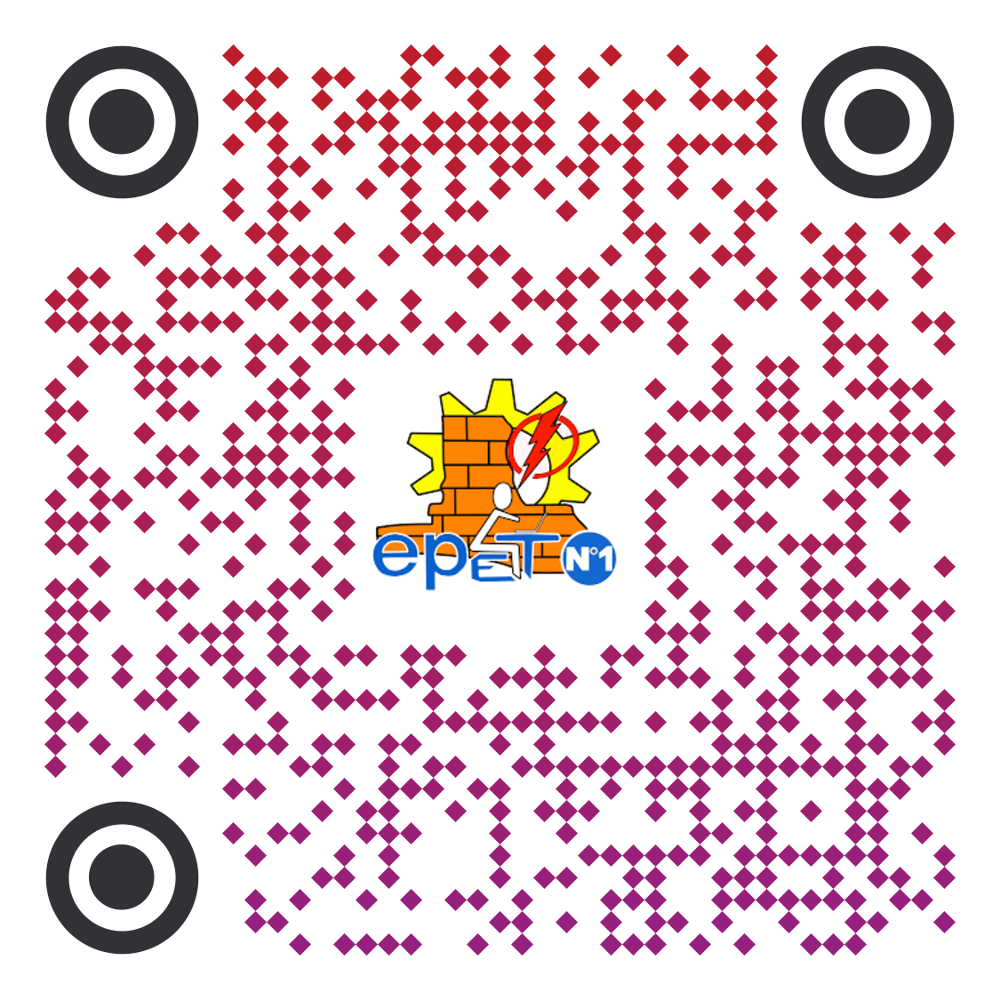

Escuela Provincial de Educación Técnica - EPET N°1 de Caucete
Ubicación
El establecimiento educativo E.P.E.T. Nº 1 se encuentra ubicado en la localidad de Caucete, entre las calles 6 de Agosto y Chaco, en pleno Barrio Justo P. Castro 1... Caucete, San Juan (CP: J5442).
Escanea para ver la ubicacion